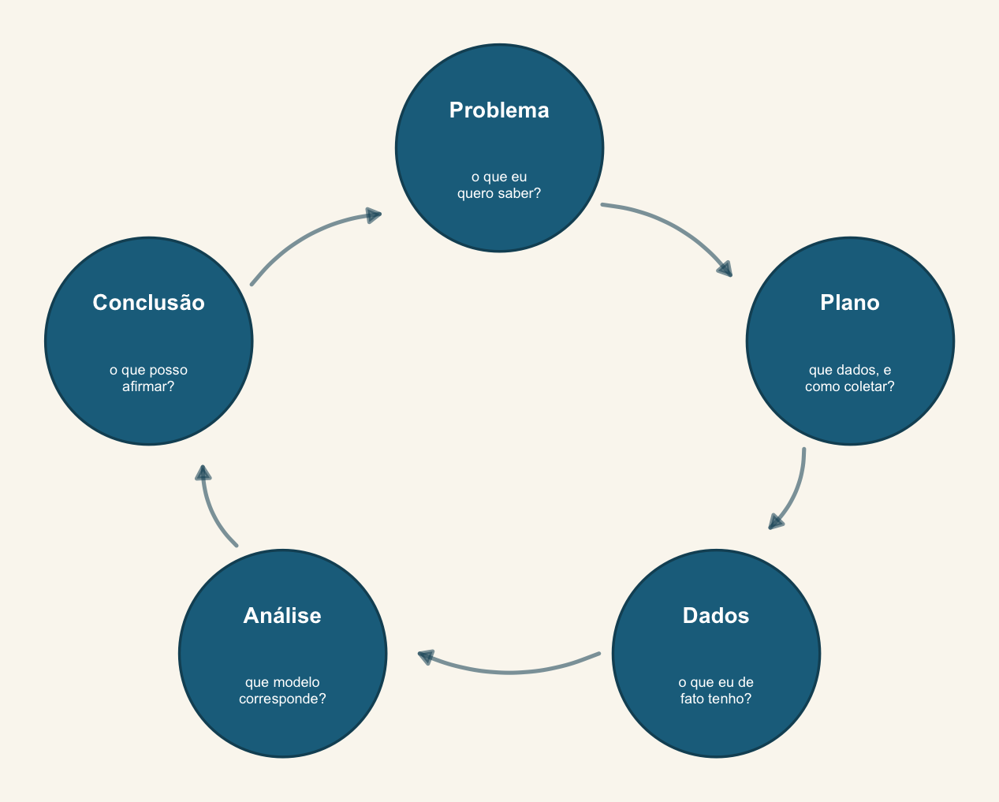

Análise de Dados Univariados
Disciplina de pós-graduação — PPG em Biologia Animal, UFMS (45 h, intensiva)
O curso em uma frase
Praticamente tudo o que você aprendeu como “teste estatístico” é um modelo linear com uma matriz de delineamento diferente. A partir daí, o caminho é sempre o mesmo: relaxar uma premissa de cada vez — distribuição da resposta (GLM), independência das observações (GLMM), incerteza sobre qual modelo usar (seleção de modelos) e incerteza sobre os próprios parâmetros (inferência bayesiana).
Como pensamos aqui: o ciclo PPDAC
Problema → Plano → Dados → Análise → Conclusão (Wild & Pfannkuch 1999). Todo encontro começa indicando em que etapa do ciclo ele vive. Detalhes no programa.
Cronograma
| Enc. | Tópico | Conteúdo |
|---|---|---|
| 1 | E1 — EDA, reprodutibilidade e literacia em IA | Ciclo PPDAC e raciocínio estatístico. Análise exploratória segundo Zuur & Ieno (2016). Fluxo Quarto + git. Pergunta focada, PICO e pré-registro. Uso responsável de LLMs em estatística. |
| 2 | E2 — O modelo linear como arcabouço unificador |
Teste t e regressão como o mesmo lm(). Matriz de delineamento explicitada. Dummy e effect coding, contr.treatment e contr.sum. Interpretação de coeficientes.
|
| 3 | E3 — ANOVA, ANCOVA e interações como modelos lineares |
ANOVA de um e dois fatores, ANCOVA e interações escritas como lm(). Somas de quadrados tipo I, II e III. Comparações planejadas com emmeans.
|
| 4 | E4 — Distribuições de probabilidade e a família exponencial | Normal, Gamma, Binomial, Poisson e binomial negativa como família exponencial. Simulação em R. O que a função de ligação resolve. Pearson e Spearman. |
| 5 | E5 — GLM I: verossimilhança, binomial e Poisson | Máxima verossimilhança. Regressão logística e de Poisson. Escala do preditor linear versus escala da resposta. DAGs e raciocínio causal na escolha de covariáveis. |
| 6 | E6 — GLM II: diagnóstico, sobredispersão, zeros inflados e ordinais |
Resíduos quantílicos com DHARMa. Sobredispersão: quasi-Poisson e binomial negativa. Modelos ZIP, ZINB e hurdle com glmmTMB. Regressão ordinal com ordinal::clm.
|
| 7 | E7 — GLMM I: por que efeitos aleatórios |
Pseudorreplicação. O que um efeito aleatório é e o que estima. Intercepto e inclinação aleatórios. Anatomia de lmer e glmer. ICC e graus de liberdade.
|
| 8 |
E8 — GLMM II: lme4, glmmTMB e a ponte bayesiana
|
Ajuste e diagnóstico de GLMM. Convergência. lme4 versus glmmTMB. O mesmo modelo reajustado em brms: priors, MCMC, pp_check() e relato BARG.
|
| 9 | E9 — Teoria da informação e seleção de modelos | Divergência de Kullback–Leibler e AIC. AICc, BIC, pesos de Akaike e razões de evidência. Model averaging. Crítica ao dredge. LOO e WAIC. |
| 10 | E10 — Clínica Estatística e apresentação de resultados | Consultoria sobre os dados de cada aluno, com toda a turma junto. Apresentação dos resultados preliminares. Encerramento e caminhos depois do curso. |
Nenhum item correspondente
Antes do primeiro dia
- Siga o roteiro de instalação. Chegue com R, RStudio, Quarto e os pacotes já funcionando — inclusive o
brms, que precisa compilar código C++ na primeira execução e pode levar alguns minutos. - Leia Popovic et al. (2024), Four principles for improved statistical ecology — discutimos os quatro princípios nos primeiros 30 min do Encontro 1.
- Traga um conjunto de dados seu (ou de um repositório aberto). Ele será a base do trabalho final e vamos usá-lo nos exercícios sempre que possível.
Como este material está organizado
Cada encontro tem uma página própria com os slides, o script da prática, os dados usados e as leituras. Os slides são documentos Quarto — o código R que aparece neles foi de fato executado na renderização, e você pode copiá-lo e rodar.
Todo o material está em https://github.com/diogoprov/analise-dados-univariados-2026-2. Correções e sugestões são bem-vindas via issue ou pull request.
Metodologia
Cada encontro abre com 20 min de productive failure (Kay et al. 2026): apresento uma pergunta ecológica e um conjunto de dados, e vocês, em grupos pequenos e deliberadamente heterogêneos quanto à formação quantitativa, propõem uma análise antes de eu apresentar o método. O objetivo não é acertar — é explicitar premissas e dificuldades. Depois disso, exposição e prática em R.
Avaliação
Um relatório Quarto reproduzível com dados próprios ou de repositório aberto. Ver trabalho final para a estrutura esperada e os critérios.
Contato
Prof. Diogo B. Provete — diogo.provete@ufms.br · Biodiversity Synthesis Lab